Menu: Controle da Qualidade › Amostragem › Verificação de Amostragens (o item aparece duas vezes no menu, para a mesma tela) · Situação do manual: Em ajuste (prints da rodada do robô de 17/11/2026) · Fonte dos prints: versão nova.
Para que serve
Cadastra os checklists de verificação da amostragem: listas de perguntas que servem para conferir a coleta (por exemplo, se a embalagem está íntegra). Cada checklist tem código automático, descrição, situação (ativo ou não) e, depois de gravado, perguntas numeradas. No legado, o checklist é ligado a uma Regra Amostragem (para produto e material a regra só é salva se tiver checklist) e as perguntas são respondidas "Sim" ou "Não" ao registrar a amostragem (do legado; a confirmar na versão nova: não foi possível conferir, porque depende da tela Regra Amostragem e da tela Consultar Amostragem, que é provisória na versão nova).
Antes de começar (o que precisa existir)
| O que precisa existir | Para quê | Onde se cadastra |
|---|---|---|
| Nada anterior | Tabela de apoio | Esta tela |
| Descrição do checklist | Nome do checklist (até 50 caracteres) | Digitada na tela |
| Roteiro de conferência da coleta definido pela empresa | As perguntas do checklist | Fora do sistema |
Passo a passo
- Abrir a tela. No menu Amostragem, clique em Verificação de Amostragens. A tela abre com o quadro "Pesquisa": CÓDIGO, DESCRIÇÃO e ATIVO (TODOS, NÃO, SIM; a caixa estreita mostra "TODO"), e os botões PESQUISAR, LIMPAR, IMPRIMIR e INCLUIR. A lista só aparece depois de PESQUISAR.

A imagem mostra o título VERIFICAÇÃO DE AMOSTRAGENS, os três filtros e os botões PESQUISAR, LIMPAR, IMPRIMIR e INCLUIR, sem linhas de resultado.
- Incluir. Clique em INCLUIR. Abre o formulário "VERIFICAÇÃO DE AMOSTRAGEM" (no singular) com CÓDIGO (bloqueado e vazio), DATA DO CADASTRO (bloqueada), DESCRIÇÃO* e ATIVO (SIM marcado). Os botões são SALVAR (dentro do quadro) e VOLTAR (no alto e embaixo). O quadro "Cadastro de Perguntas" ainda não aparece.
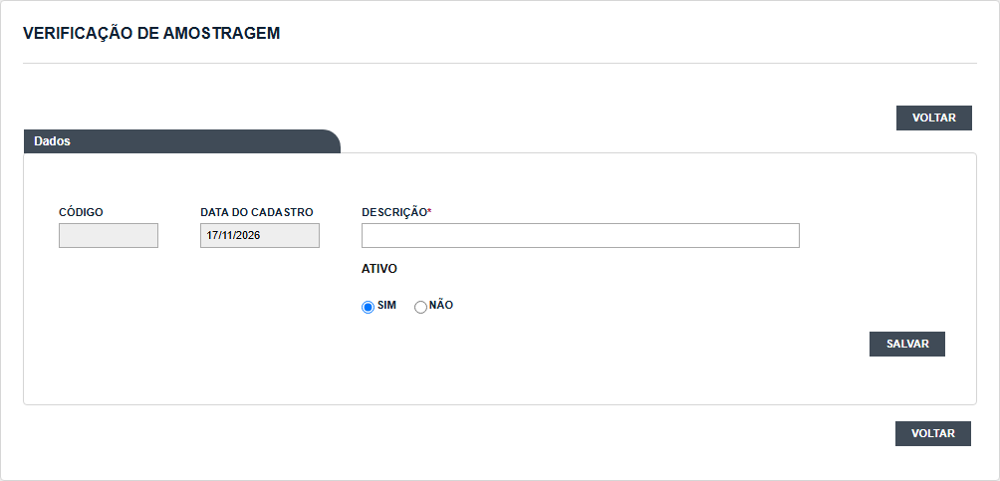
A imagem mostra o formulário em branco, com o quadro "Dados" e sem o quadro de perguntas.
- Salvar vazio (para conhecer a mensagem). Clique em SALVAR sem preencher. Aparece a faixa rosa "Informe a descrição e, na edição, a justificativa." no alto.
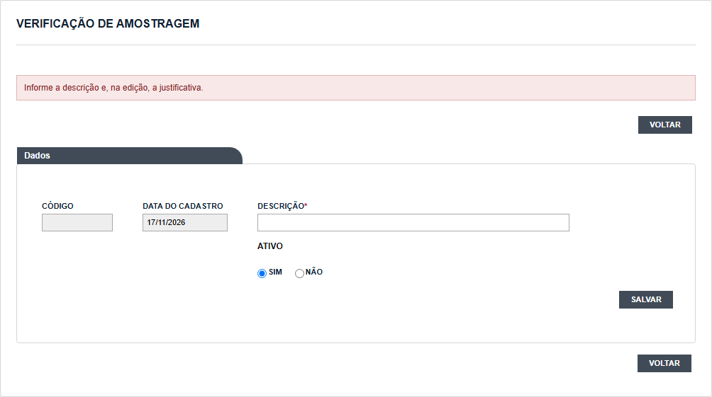
A imagem mostra a faixa rosa com a mensagem de obrigatório sobre o formulário.
- Preencher. Digite a Descrição e deixe ATIVO = SIM.
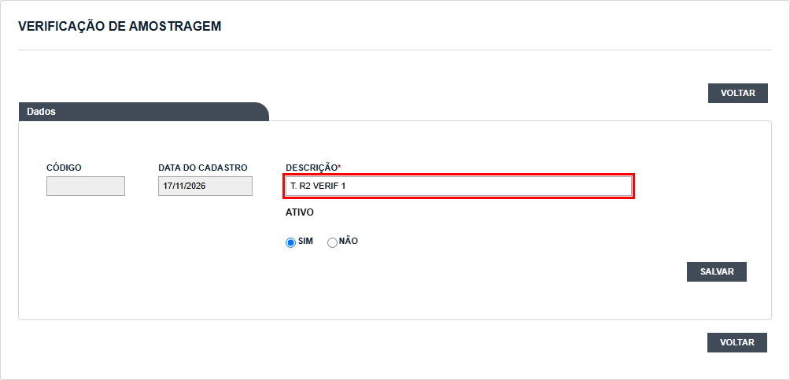
A imagem mostra a descrição "T. R2 VERIF 1" com SIM marcado.
- Salvar e confirmar. Clique em SALVAR. Abre a caixa "Confirmar operação: Confirma a inclusão do item?" com CANCELAR e CONFIRMAR. Clique em CONFIRMAR.
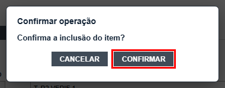
A imagem mostra a caixa de confirmação da inclusão sobre o formulário preenchido.
Depois de CONFIRMAR, a tela volta à pesquisa vazia e sem nenhuma mensagem de sucesso (DV-CQ-N-009). Para ver o checklist é preciso pesquisar de novo.

A imagem mostra a pesquisa em branco, sem lista e sem texto de confirmação.
- Conferir na lista. Clique em PESQUISAR (ou filtre, por exemplo, por Descrição "VERIF"). A lista mostra CÓDIGO, DESCRIÇÃO, ATIVO ("Sim" ou "Não") e três ícones: lápis (editar), X vermelho (excluir) e o selo azul LOG (histórico).
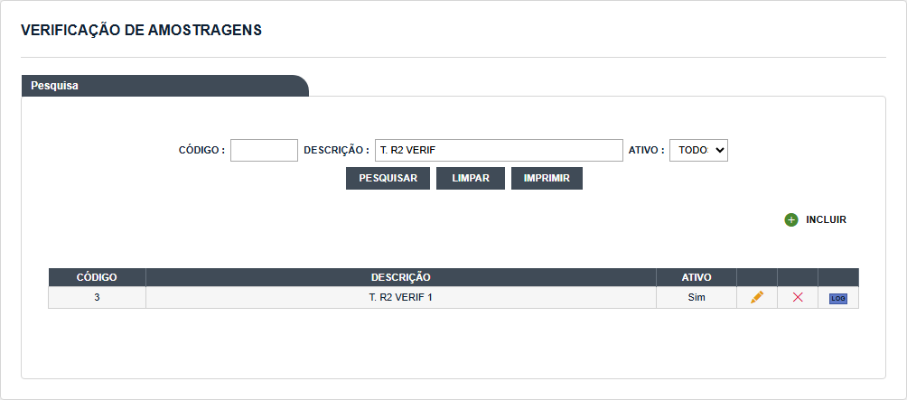
A imagem mostra o checklist de código 3, "T. R2 VERIF 1", ativo "Sim", com os três ícones.
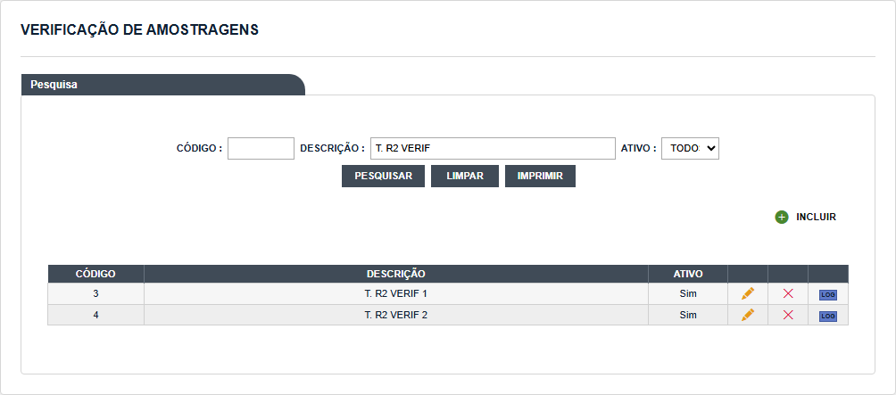
A imagem mostra a lista com os checklists 3 e 4 ("T. R2 VERIF 1" e "T. R2 VERIF 2").
Se a pesquisa não achar nada, a grade mostra "A pesquisa não retornou nenhum resultado.".
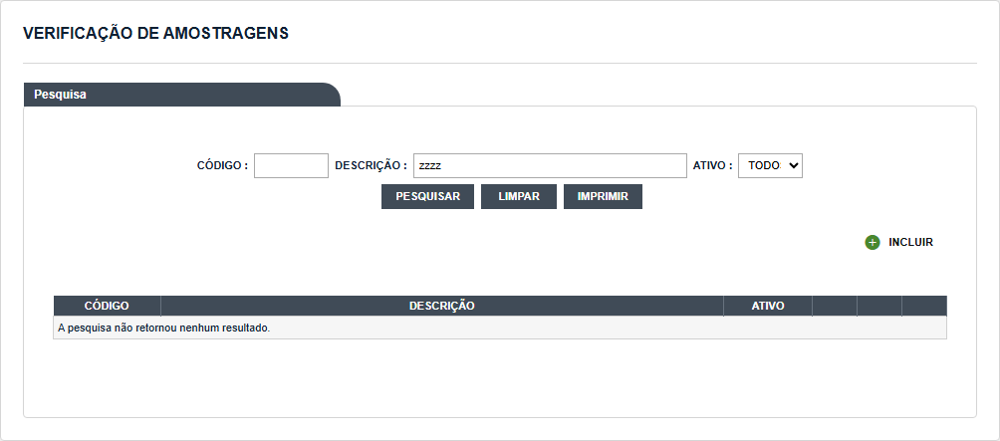
A imagem mostra a Descrição "zzzz" digitada e a grade com a mensagem de pesquisa sem resultado.
Descrição repetida. Ao incluir de novo uma descrição que já existe, a tela recusa: faixa rosa "Descrição já está cadastrada para outro registro!" (API 409). A recusa vale também quando a repetição vem em minúsculas ("t. r2 verif 1") e com espaço no fim.
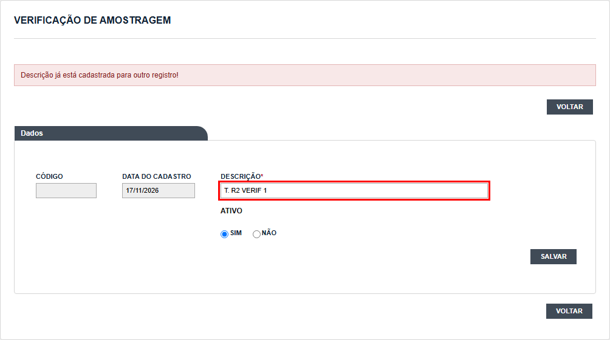
A imagem mostra a faixa rosa com a recusa e o campo Descrição destacado em vermelho com "T. R2 VERIF 1".
- Alterar ou inativar. Clique no lápis. O formulário abre com o código preenchido e traz o campo JUSTIFICATIVA* (obrigatório na alteração), além do quadro Cadastro de Perguntas (campo NRº, TÍTULO DA PERGUNTA, SALVAR PERGUNTA, LIMPAR e a grade de perguntas com as colunas Nº e DESCRIÇÃO) e do botão DUPLICAR.

A imagem mostra o checklist de código 3 aberto, com Justificativa* vazia, o quadro "Cadastro de Perguntas" (grade vazia: "A pesquisa não retornou nenhum resultado.") e os botões DUPLICAR e VOLTAR. O rótulo do campo da numeração está escrito "NRº" (DV-CQ-N-012).
Se clicar em SALVAR sem justificativa, aparece a faixa rosa "Informe a descrição e, na edição, a justificativa.".
A imagem mostra a faixa rosa com a mensagem sobre a justificativa e o campo Justificativa vazio.
Mude a descrição (ou marque NÃO para inativar), escreva a justificativa e clique em SALVAR; a caixa "Confirma a alteração do item?" pede CONFIRMAR. Depois de confirmar, a tela volta à pesquisa vazia, sem mensagem (DV-CQ-N-009).
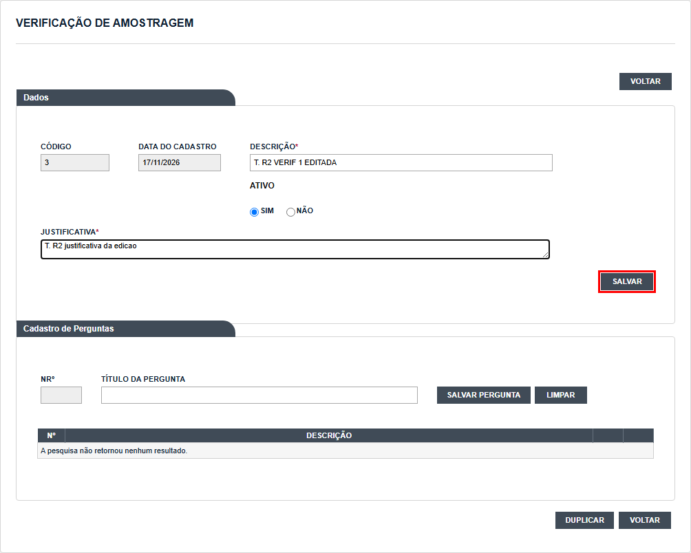
A imagem mostra a edição com a descrição "T. R2 VERIF 1 EDITADA" e a justificativa preenchida.
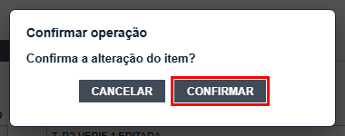
A imagem mostra a caixa "Confirma a alteração do item?" sobre o formulário.

A imagem mostra a pesquisa em branco, sem texto de confirmação.
Para inativar, marque NÃO, escreva a justificativa e confirme; a lista passa a mostrar "Não" e o filtro ATIVO = NÃO encontra o registro.
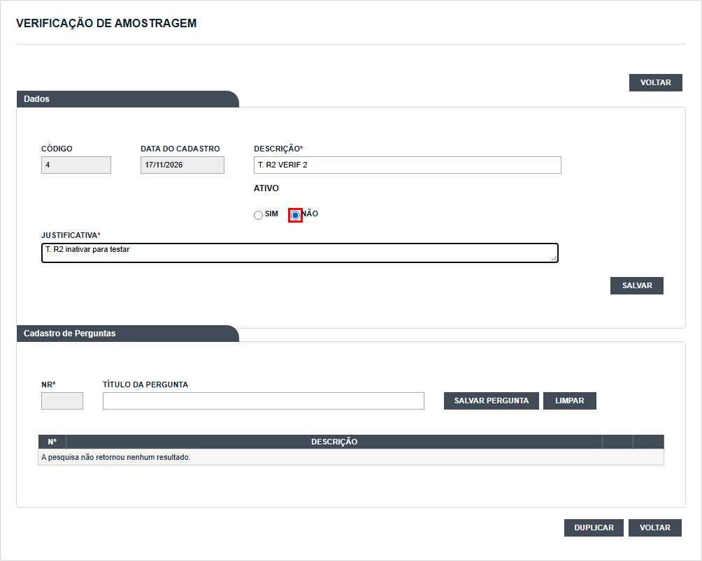
A imagem mostra a edição com ATIVO = NÃO e a justificativa preenchida.
A imagem mostra o checklist de código 4 com ATIVO "Não" na lista.
- Perguntas do checklist. No quadro "Cadastro de Perguntas", digite o Título da Pergunta (até 100 caracteres; a digitação para no 100º) e clique em SALVAR PERGUNTA. Com o título vazio, a faixa rosa diz "A pergunta é obrigatória e deve conter no máximo 100 caracteres.". A numeração (Nº) é automática (1, 2...). A pergunta não pede justificativa.
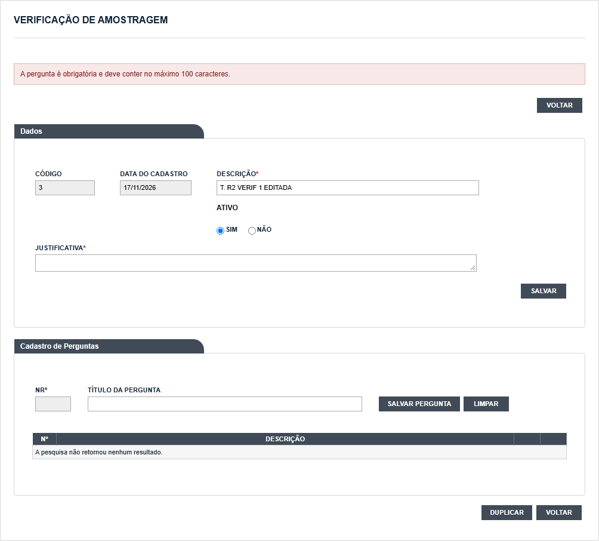
A imagem mostra a faixa rosa "A pergunta é obrigatória e deve conter no máximo 100 caracteres." sobre a edição.
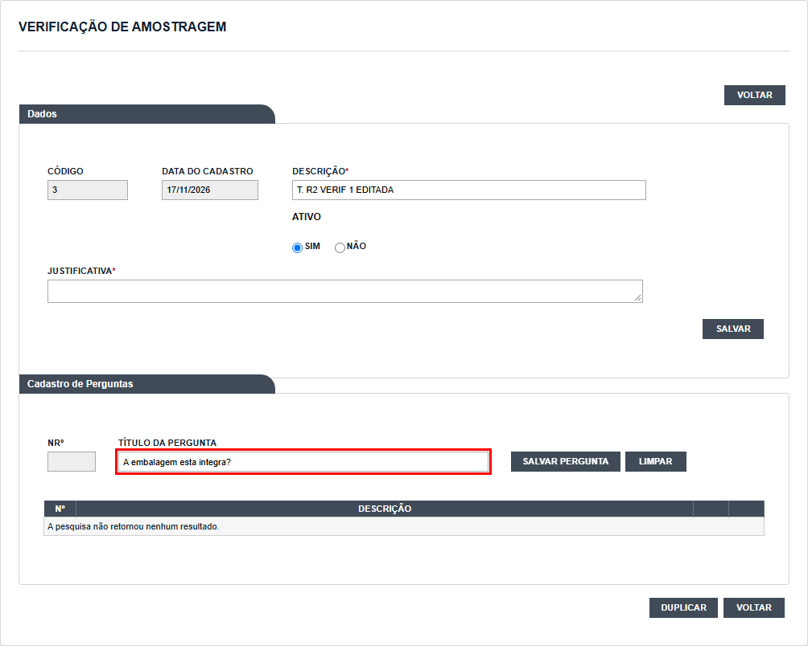
A imagem mostra o título da pergunta digitado, antes de SALVAR PERGUNTA.
Cada inclusão, alteração e exclusão de pergunta pede confirmação: "Confirmar a inclusão da pergunta?", "Confirmar a alteração da pergunta?" e "Confirma a exclusão da pergunta?" (CANCELAR e CONFIRMAR).
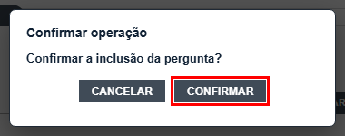
A imagem mostra a caixa de confirmação da inclusão da pergunta.
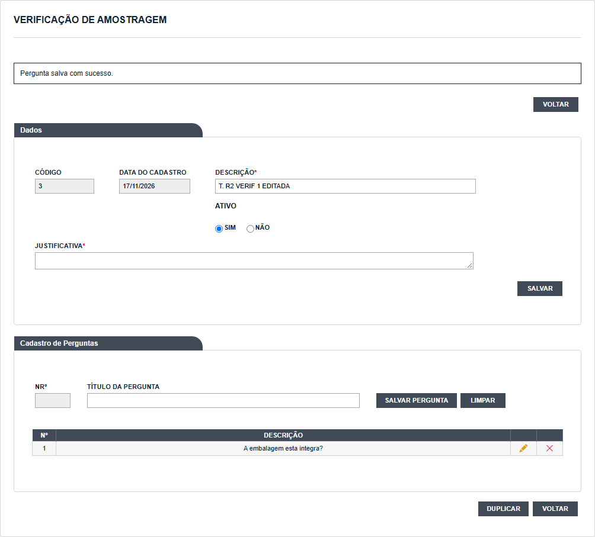
A imagem mostra a pergunta 1 na grade do Cadastro de Perguntas.
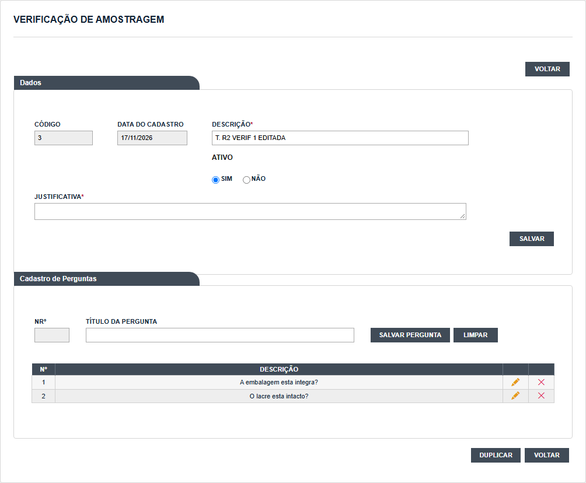
A imagem mostra as perguntas 1 e 2 na grade, cada uma com o lápis (Editar pergunta) e o X (Excluir pergunta).
Para alterar, clique no lápis da pergunta: o texto vai para o campo, você muda e clica em SALVAR PERGUNTA. Depois de gravar ou alterar, a faixa "Pergunta salva com sucesso." aparece.
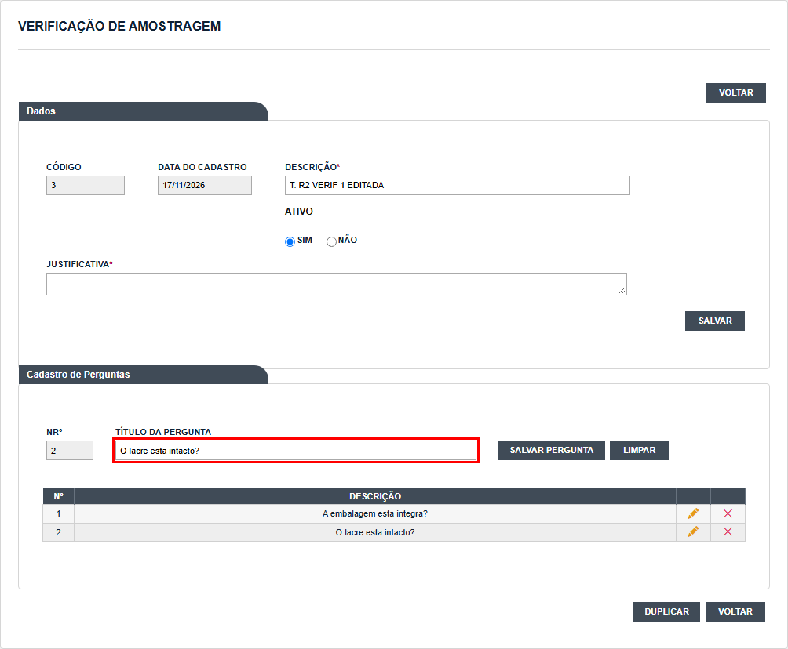
A imagem mostra a pergunta 2 carregada no campo para edição.
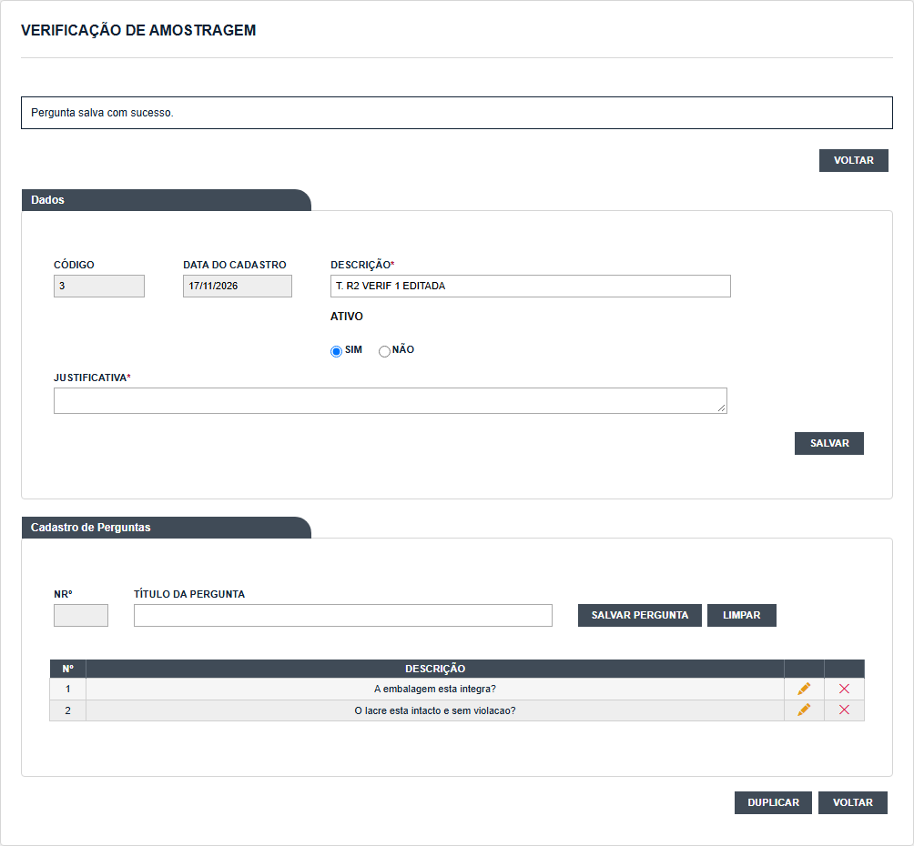
A imagem mostra a faixa "Pergunta salva com sucesso." e a grade com a pergunta 2 alterada.
Para excluir, clique no X da pergunta e confirme. A grade volta sem a pergunta e sem mensagem.
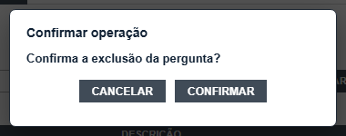
A imagem mostra a caixa de confirmação da exclusão da pergunta.
A imagem mostra a grade só com a pergunta 1 e nenhuma mensagem na tela.
- Duplicar. Com o checklist gravado aberto, clique em DUPLICAR. A caixa pergunta "Confirma a duplicação da verificação e suas perguntas?" (CANCELAR e CONFIRMAR). Ao confirmar, o sistema cria outro checklist com a descrição fixa "DUPLICADO_CODIGO:
" , ATIVO = Sim e as perguntas copiadas, e volta à pesquisa sem mensagem (DV-CQ-N-009). Duplicar duas vezes o mesmo checklist gera duas cópias com a mesma descrição (DV-CQ-N-010), e o código de um checklist excluído foi reaproveitado (DV-CQ-N-011).
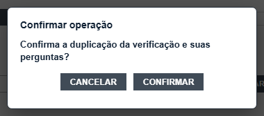
A imagem mostra a caixa "Confirma a duplicação da verificação e suas perguntas?".
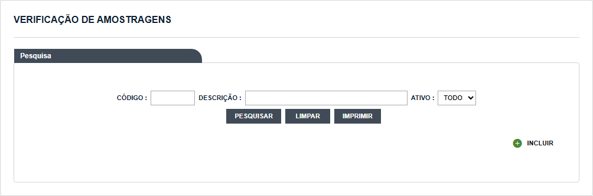
A imagem mostra a pesquisa em branco, sem mensagem.

A imagem mostra a cópia "DUPLICADO_CODIGO: 3" na lista.
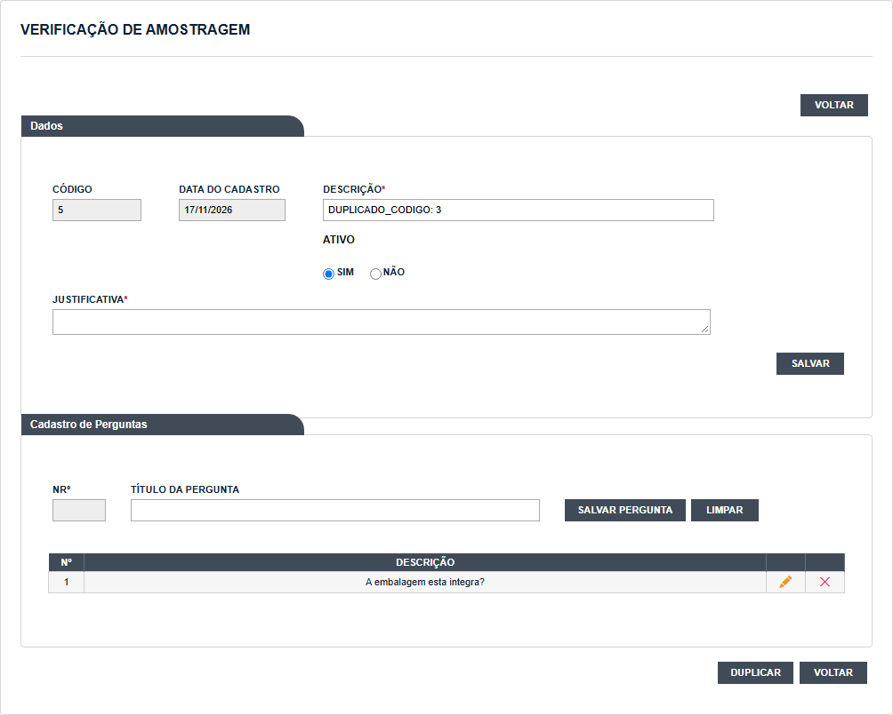
A imagem mostra o checklist de código 5, "DUPLICADO_CODIGO: 3", com a pergunta 1 copiada.

A imagem mostra a tela depois de duplicar o mesmo checklist pela segunda vez.

A imagem mostra os códigos 5 e 6 com a mesma descrição "DUPLICADO_CODIGO: 3".
- Ver o histórico. Clique no selo azul LOG (dica "Consultar LOG"). A janela "LOG DE ALTERAÇÕES" mostra cada evento com data, hora, Usuário (só o número; DV-CQ-N-006), a justificativa e CAMPO / VALOR ANTERIOR / VALOR NOVO. O histórico do checklist registra também as perguntas, com justificativa automática ("INCLUSÃO DE PERGUNTA -
", "ALTERAÇÃO DE PERGUNTA", "EXCLUSÃO DE PERGUNTA - 2"), e tem duas páginas ("Anterior", "Página 1 de 2", "Próxima").
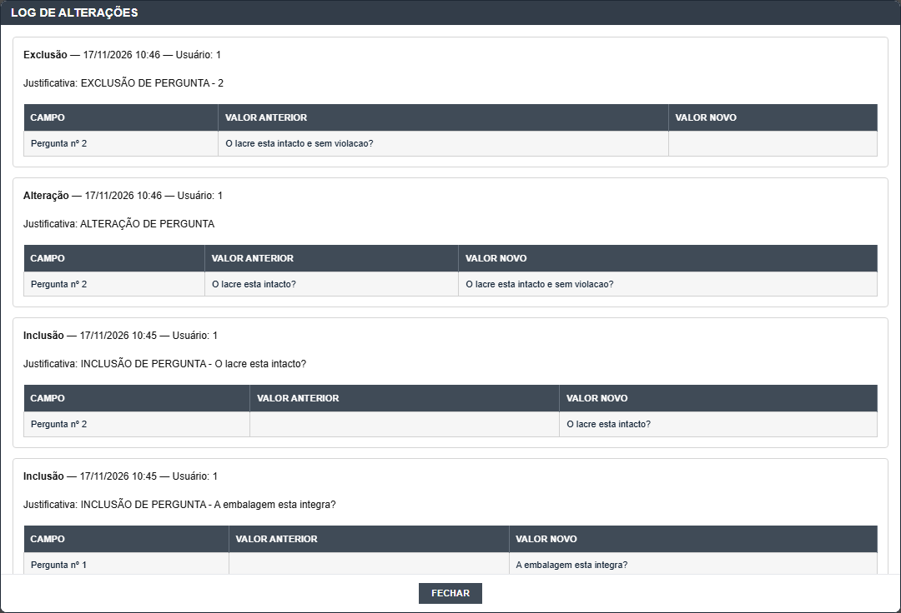
A imagem mostra, do mais novo para o mais antigo, a exclusão da pergunta 2, a alteração da pergunta 2 e as inclusões das perguntas 2 e 1, todas com "Usuário: 1".
- Imprimir. Clique em IMPRIMIR. Abre uma nova aba com um relatório em página simples (não é PDF): título VERIFICAÇÃO DE AMOSTRAGENS, "Total de registros: N", um botão IMPRIMIR e a tabela CÓDIGO, DESCRIÇÃO e ATIVO. O relatório respeita o filtro (com "VERIF 2" saiu 1 registro). A tela original não muda.
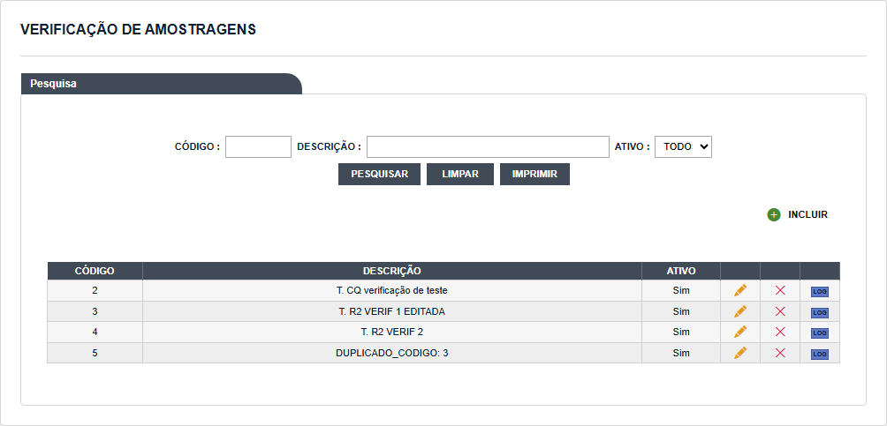
A imagem mostra a tela original com a lista, sem alteração.
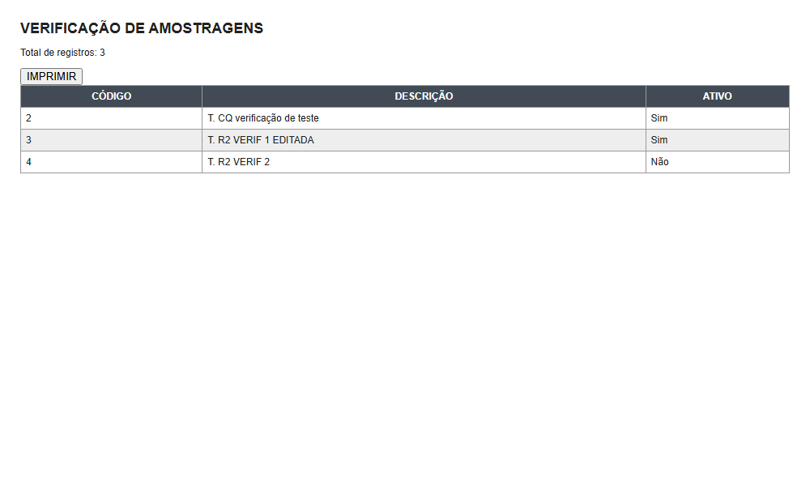
A imagem mostra o relatório com "Total de registros: 3" e os checklists 2, 3 e 4.
- Excluir. Clique no X vermelho. A caixa "Confirmar exclusão: Confirma a exclusão do item?" tem CANCELAR e CONFIRMAR; não pede justificativa. Depois de confirmar, a tela volta à pesquisa vazia, sem mensagem (DV-CQ-N-009).
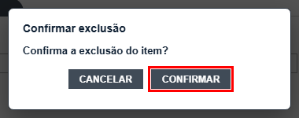
A imagem mostra a caixa de exclusão sobre a lista.

A imagem mostra a pesquisa em branco, sem mensagem.

A imagem mostra a lista, depois de pesquisar de novo, só com os checklists de código 2, 3 e 4 (o 5 foi excluído).
Checklist em uso por uma Regra Amostragem não pode ser excluído. Se o checklist já foi escolhido numa regra (tela Regra Amostragem), a caixa de confirmação aparece igual, mas, ao confirmar, a exclusão é recusada com a faixa rosa "O registro possui vínculos e não pode ser excluído." (API 409) e o checklist continua na lista. O legado não conferia o uso.
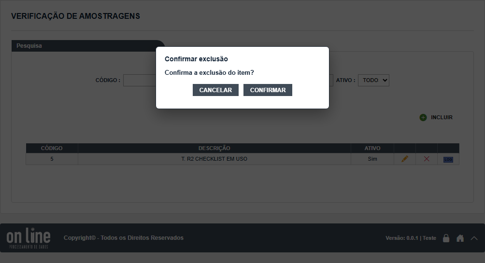
A imagem mostra o checklist 5, "T. R2 CHECKLIST EM USO", com a caixa "Confirmar exclusão: Confirma a exclusão do item?" aberta (CANCELAR e CONFIRMAR). O nome do arquivo cita a Regra Amostragem porque o teste partiu dela.
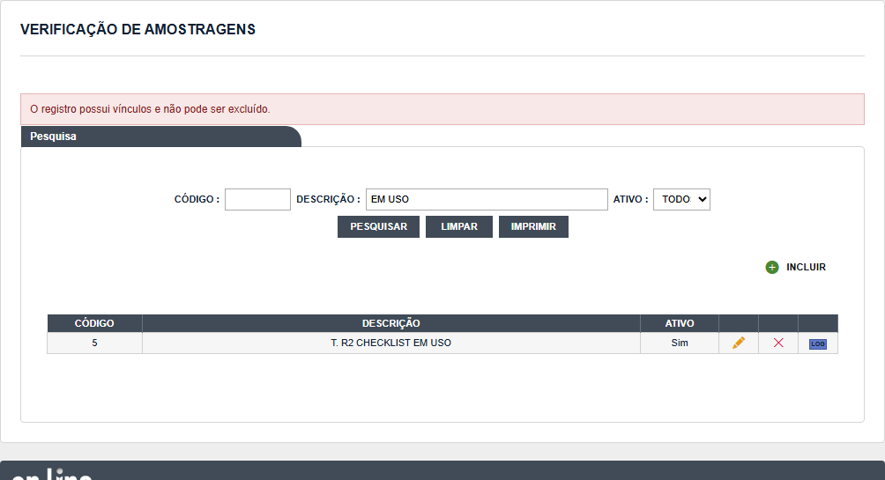
A imagem mostra a faixa rosa "O registro possui vínculos e não pode ser excluído." sobre a pesquisa, com o checklist 5 ainda na lista.
Ícones e botões da lista
| Ícone | O que faz | Situação |
|---|---|---|
| Lápis | Abre o formulário (com justificativa e perguntas) | Visto em toda linha |
| X vermelho | Abre a caixa "Confirmar exclusão" | Visto em toda linha |
| Selo azul LOG | Abre o histórico (dica "Consultar LOG") | Visto em toda linha |
Botões da tela: PESQUISAR, LIMPAR, IMPRIMIR, INCLUIR; no formulário, SALVAR, VOLTAR, DUPLICAR (só no checklist gravado), SALVAR PERGUNTA e LIMPAR (da pergunta; não testado). Na grade de perguntas: lápis (Editar pergunta) e X (Excluir pergunta).
Botões e ações
| Botão | O que faz |
|---|---|
| PESQUISAR / LIMPAR | Lista e esvazia os filtros |
| IMPRIMIR | Abre nova aba com relatório simples (não é PDF) que respeita o filtro |
| INCLUIR | Abre o formulário vazio |
| SALVAR | Confere descrição (e justificativa na edição) e pergunta "Confirma a inclusão (ou alteração) do item?" |
| DUPLICAR | Pergunta "Confirma a duplicação da verificação e suas perguntas?" e cria "DUPLICADO_CODIGO: |
| SALVAR PERGUNTA | Grava ou altera a pergunta, com confirmação |
| LIMPAR (da pergunta) | Limpa o campo da pergunta (não testado) |
| VOLTAR | Volta à pesquisa |
Mensagens do sistema
| Mensagem | Quando aparece |
|---|---|
| Informe a descrição e, na edição, a justificativa. | Salvar sem descrição ou, na edição, sem justificativa |
| Descrição já está cadastrada para outro registro! | Descrição repetida ao incluir (não no DUPLICAR) |
| A pergunta é obrigatória e deve conter no máximo 100 caracteres. | Salvar pergunta sem título |
| Confirmar operação: Confirma a inclusão do item? / Confirma a alteração do item? | Ao salvar (CANCELAR e CONFIRMAR) |
| Confirma a duplicação da verificação e suas perguntas? | Ao clicar DUPLICAR |
| Confirmar a inclusão da pergunta? / Confirmar a alteração da pergunta? / Confirma a exclusão da pergunta? | Ao gravar, alterar ou excluir pergunta |
| Confirmar exclusão: Confirma a exclusão do item? | Ao excluir o checklist |
| Pergunta salva com sucesso. | Depois de incluir ou alterar uma pergunta |
| A pesquisa não retornou nenhum resultado. | Lista ou perguntas vazias |
| Mensagem de sucesso ao incluir, alterar, excluir ou duplicar o checklist | Não existe: a tela volta à pesquisa vazia (DV-CQ-N-009) |